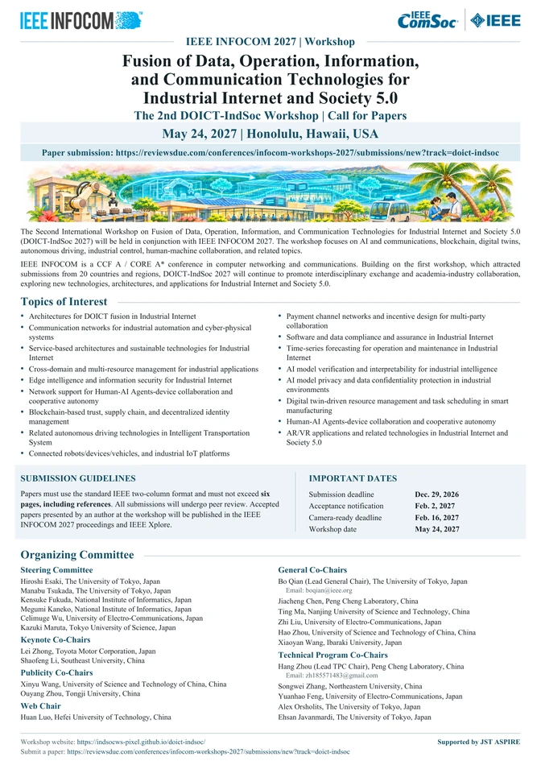

Call for Papers
Fusion of Data, Operation, Information, and Communication Technologies for Industrial Internet and Society 5.0

One-page Call for Papers
Download the poster to share with colleagues or open it for full-size viewing.
Scope & Objectives
The Industrial Internet and Society 5.0 demand robust communication infrastructures, distributed intelligence and close coordination between digital and physical systems. The DOICT-IndSoc Workshop aims to advance the deep integration of Data Technology, Operational Technology, Information Technology and Communication Technology.
The 2nd edition welcomes theoretical, experimental and application-oriented contributions involving network communication, cyber-physical systems, industrial digital transformation, artificial intelligence, blockchain, digital twins, edge intelligence, industrial control and human–AI collaboration. By bringing together researchers and practitioners, the workshop provides a forum for discussion of new architectures, methods and emerging applications.
Topics of Interest
Topics include, but are not limited to:
Paper Submission
Submission Guidelines
- Use the standard IEEE two-column format.
- Maximum length: 6 pages, including references.
- Submissions are subject to peer review.
- Accepted papers presented by an author at the workshop are intended for publication in the IEEE INFOCOM 2027 proceedings and IEEE Xplore, in accordance with conference policies.
Online submission link: To be announced.
Important Dates
- Paper Submission DeadlineDec. 29, 2026
- Acceptance NotificationFeb. 2, 2027
- Camera-Ready DeadlineFeb. 16, 2027
- Workshop DateMay 24, 2027
Deadline time zone will be specified with the submission portal.
IEEE INFOCOM 2027
Workshop: May 24, 2027 · Location: Honolulu, Hawaii, USA.
For main conference information, see IEEE INFOCOM 2027 official website ↗.